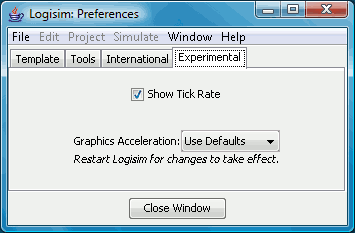

The Experimental tab

These preferences enable features that are considered experimental,
inserted to garner user feedback.
- Graphics Acceleration: Several Logisim users have reported
that Logisim seems quite slow at rendering graphics. One user observed
that adding -Dsun.java2d.d3d=True to the command line seemed
to address this completely. You can attempt to control this using a
drop-down box. I haven't myself observed speed problems
in Logisim, so I can't evaluate its effectiveness; I'm relying on user
reports about whether this helps. Note that it certainly won't have
any effect until Logisim is restarted.
Next: Command line options.